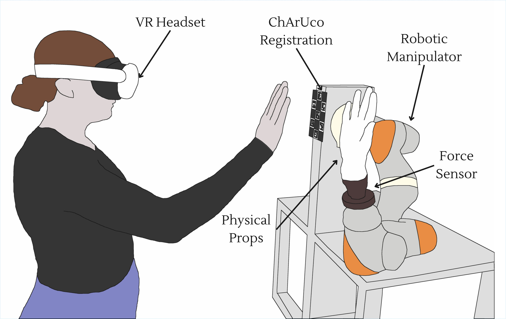
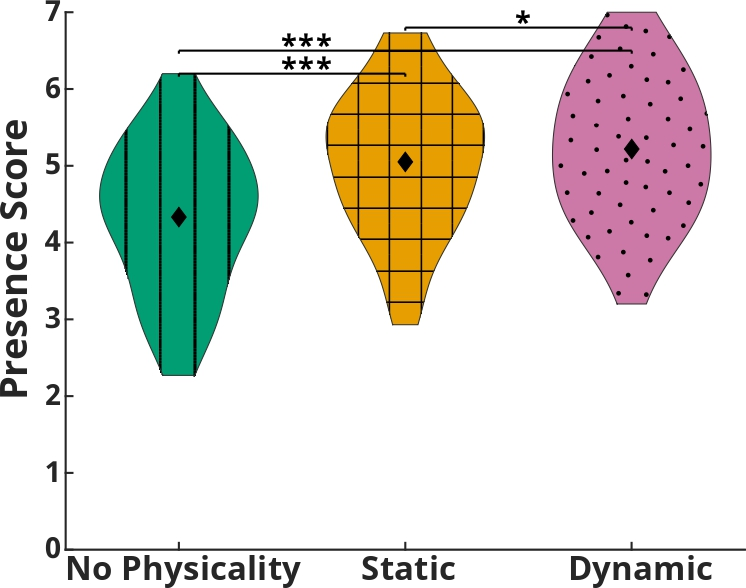
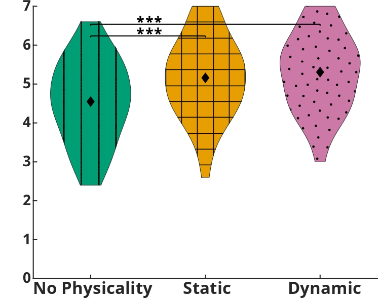
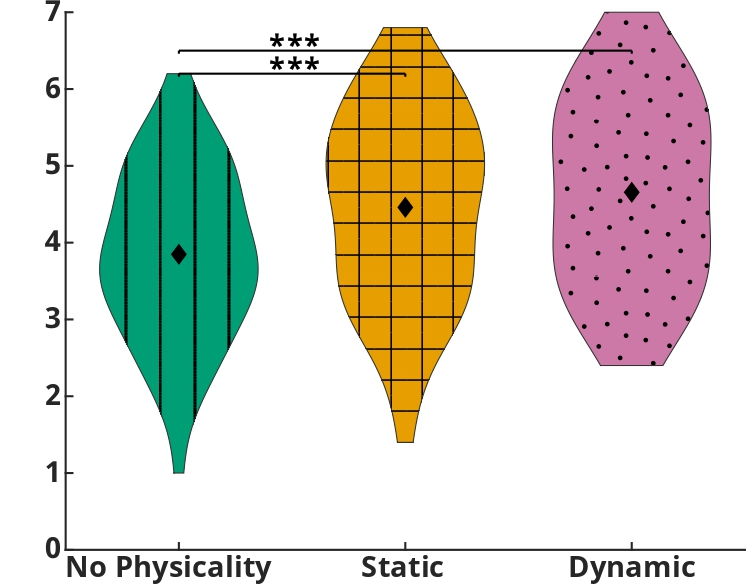
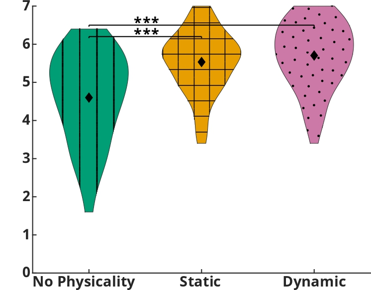
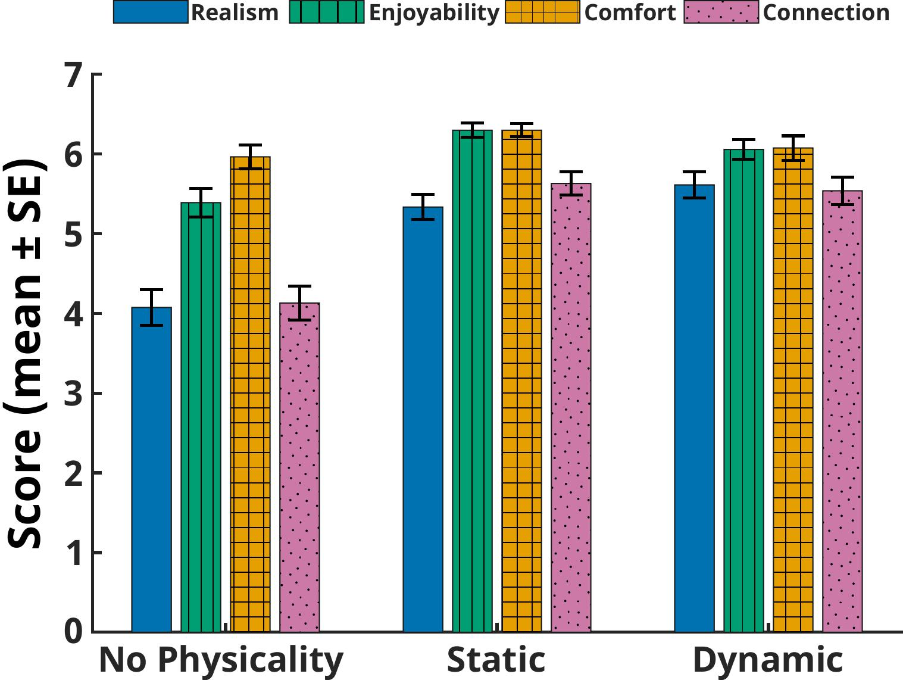

Abstract
This work investigates how robot-mediated physicality influences the perception of social–physical interactions with virtual characters. ETHOS (Encountered-Type Haptics for On-demand Social interaction) is an encountered-type haptic display that integrates a torque-controlled manipulator and interchangeable props with a VR headset to enable three gestures: object handovers, fist bumps, and high fives. We conducted a user study to examine how ETHOS adds physicality to virtual character interactions and how this affects presence, realism, enjoyment, and connection metrics. Each participant experienced one interaction under three conditions: no physicality (NP), static physicality (SP), and dynamic physicality (DP). SP extended the purely virtual baseline (NP) by introducing tangible props for direct contact, while DP further incorporated motion and impact forces to emulate natural touch. Results show presence increased stepwise from NP to SP to DP. Realism, enjoyment, and connection also improved with added physicality, though differences between SP and DP were not significant. Comfort remained consistent across conditions, indicating no added psychological friction. These findings demonstrate the experiential value of ETHOS and motivate the integration of encountered-type haptics into socially meaningful VR experiences.
System

Experimental Design
To assess ETHOS’s capacity to recreate social–physical interactions in virtual reality, we conducted a user study with 55 participants to examine key experiential outcomes. The study employed a mixed design to evaluate the effects of interaction type (object handover, fist bump, and high five) and physicality level (no physicality, static physicality, and dynamic physicality) on participants’ experiences, as well as the interaction between these factors. The three levels of physicality enabled a progression from a purely virtual baseline, to an investigation of static physical props, and finally to an assessment of whether incorporating motion and impact further enhanced the experience. These corresponded to the no-physicality, static-physicality, and dynamic-physicality conditions, respectively. Metrics of presence, realism, enjoyment, comfort, and connection to the virtual character were defined to evaluate user experience.
Static Interaction
Dynamic Interaction
Results
The three physicality conditions allowed us to evaluate social–physical interactions across increasing levels of embodiment. Results demonstrate a clear improvement in experience from the virtual baseline (NP) to both static and dynamic physicality conditions. However, the comparison between static and dynamic physicality revealed only partial and inconsistent gains, suggesting that the integration of motion and impact warrants further refinement. Comfort scores did not differ significantly across physicality conditions, and practical equivalence could not be established through TOST analysis. These findings suggest that comfort remained broadly consistent across interaction types, though subtle differences cannot be ruled out. Across object handover, fist bump, and high five, interaction type had no main effect on presence, enjoyability, comfort, or avatar connection. This generalization suggests ETHOS is broadly applicable to short, socially meaningful gestures.
Presence




Presence. Results across physicality conditions—no physicality, static physicality, and dynamic physicality—for the Multimodal Presence Scale (Makransky 2017): (a) total presence, (b) physical presence, (c) social presence, and (d) self-presence. Significant between-condition differences are annotated (* p < 0.05, *** p < 0.001).
Secondary Metrics

Secondary metrics. Mean ratings of realism, enjoyability, comfort, and character connection across the three physicality conditions (no physicality, static, dynamic). Error bars represent ± standard error of the mean.
Conclusion
This work presented the first experiential evaluation of ETHOS (Encountered-Type Haptics for On-demand Social interaction), advancing encountered-type haptics from inert object rendering to socially meaningful interactions with virtual characters. Through a 55-participant study of object handovers, fist bumps, and high fives across no, static, and dynamic physicality conditions, we provide the first evidence of how physical contact shapes social–physical HRI in VR. The findings are clear: purely virtual baselines fail to sustain believable engagement, while even static prop alignment substantially enhances presence, realism, enjoyability, and connection to the virtual character. Dynamic rendering offers additional gains in presence but also reveals user sensitivity to motion timing and compliance, underscoring the need for more tailored trajectory generation and adaptive force control. Together, these results highlight a broader lesson: physicality is likely not optional but foundational for creating meaningful social–physical interactions with characters in VR. Looking forward, future work will refine ETHOS by tailoring motion strategies to specific gestures, introducing compliance-based contact detection, and enhancing virtual character realism.